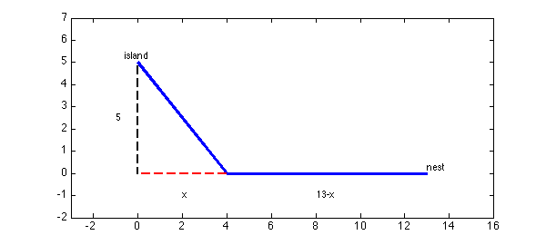
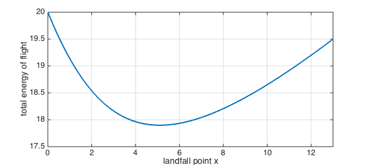
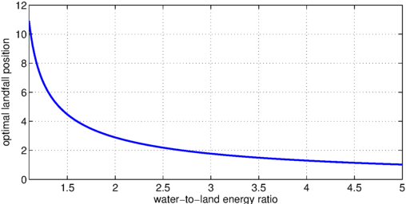

LW = 'LineWidth'; MS = 'MarkerSize'; format short close all
This discussion is based on problem 75 from section 3.7 of [1].
The premise
Suppose a bird is on an island 5 km away from the shore of a large lake. She wants to return to her nest, which is another 13 km away along the shoreline. However, it's more difficult to fly over water than over land, so the path of least energy may not be the most direct one. Instead, she may be better off flying to a point that is $x$ km along the shore line, then traveling the remaining $13-x$ km over land.
island = [0,5]; nest = [13,0]; % coordinates of start/end landfall = [4,0]; % example with x=4 path = [island;landfall;nest]; plot(path(:,1),path(:,2),LW,3) text(island(1),island(2),'island','ver','bot','hor','c') text(nest(1),nest(2),'nest','ver','bot','hor','l') hold on, plot([island(1);0],[island(2);0],'k--',LW,2) plot([0;landfall(1)],[0;landfall(2)],'r--',LW,2) axis([-2 15 -2 7]), axis equal text(-1,island(2)/2,'5'), text(2,-1,'x'), text(8,-1,'13-x')

Finding the optimal path
We know that the landfall spot $x$ is between $0$ and $13$, so we will define a chebfun for it over that range.
x = chebfun('x',[0 13]);
As a function of the landfall point, the length of the path over water is
water_length = sqrt(x.^2+25);
and over land, it's
land_length = 13-x;
Let's say it takes 40% more energy per km to fly over water than over land. If we normalize so that the energy to fly over land is $1$ energy unit per km, then the total energy is
total_energy = 1*land_length + 1.4*water_length;
(If we had not chosen to normalize the energy, then the total energy would be proportional to this quantity, which is irrelevant to minimization.)
clf, plot(total_energy,LW,2), grid on
xlabel('landfall point x'), ylabel('total energy of flight')

As you can see from the curve, there is a unique value of $x$ that minimizes the total energy.
[energy_optimal,x_optimal] = min(total_energy)
energy_optimal =
17.8990
x_optimal =
5.1031
Of course, that minimum point occurs at the single place where the derivative of the total energy is zero.
find( diff(total_energy)==0 )
ans =
5.1031
Exploring the assumptions
The "40% more energy" assumption for water flying is a guess at best. How does the optimal point vary as a function of the water-to-land ratio? Let's explore it over a range from 1 (same energy for both) to 2 (twice as much energy over water).
Each value of the W-to-L ratio will give a different optimal landfall point $x$. We will produce this value by mimicking the optimization step above. For example,
WL_ratio = 1.05; total_energy = land_length + WL_ratio*water_length; [energy_optimal,x_optimal] = min(total_energy)
energy_optimal =
14.6248
x_optimal =
13
Notice that the optimal strategy in this case is for the bird to fly directly to the nest, because the penalty for going over water is quite small. Mathematically, the minimum does not occur at a zero in the derivative, but at an endpoint of the interval.
clf, subplot(1,2,1), plot(total_energy,LW,2), grid on
xlabel('x'), ylabel('total energy')
subplot(1,2,2), plot(diff(total_energy),LW,2), grid on
xlabel('x'), ylabel('derivative')

At the other extreme, you would expect that if flying over water is very difficult, the best strategy is to go directly to land. However, this is never exactly the case:
WL_ratio = 5; total_energy = land_length + WL_ratio*water_length; [energy_optimal,x_optimal] = min(total_energy)
energy_optimal =
37.4949
x_optimal =
1.0206
WL_ratio = 50; total_energy = land_length + WL_ratio*water_length; [energy_optimal,x_optimal] = min(total_energy)
energy_optimal =
262.9500
x_optimal =
0.1000
Function function
Rather than just exploring the behavior for individual water-to-land ratios, we can construct a new chebfun that captures the entire relationship. First, we encode the fact that the total energy function is dependent on the W-L ratio:
total_energy_function = @(WL) land_length + WL*water_length;
It's a little tricky, but the output of that function of the WL parameter is a chebfun in the landfall variable $x$. (Remember, functions can map anything to anything, not just numbers to numbers.) The optimal location, which depends on WL, is still found as a critical point of the total energy. (It's slightly easier to work with the derivative of the energy than to extract the second output of the MIN function.)
optimal_landfall_function = @(WL) find( diff(total_energy_function(WL))==0 );
The output of this function is now a number for each given value of WL. Our original result is simply
optimal_landfall_function(1.4)
ans =
5.1031
So, now we construct a chebfun to capture the dependence on WL. (The 'vectorize' argument tells chebfun that our function expects only one value of WL at a time.)
optimal_landfall = chebfun( optimal_landfall_function, [1.1 5], 'vectorize');
clf, plot(optimal_landfall,LW,2), grid on
xlabel('water-to-land energy ratio'), ylabel('optimal landfall position')

In practice, it's easy to observe the behavior of birds but very difficult to estimate the true value of WL. We can turn the problem around. It's reasonable to assume that evolution has honed the instinct of our bird to behave optimally. So if, for example, we observed that $x=4.5$ was chosen on average, then we might conclude that the actual water-to-land energy ratio is
find( optimal_landfall==4.5 )
ans =
1.4948
References
- J. Stewart, Calculus, 7th edition. Brooks/Cole, 2012.